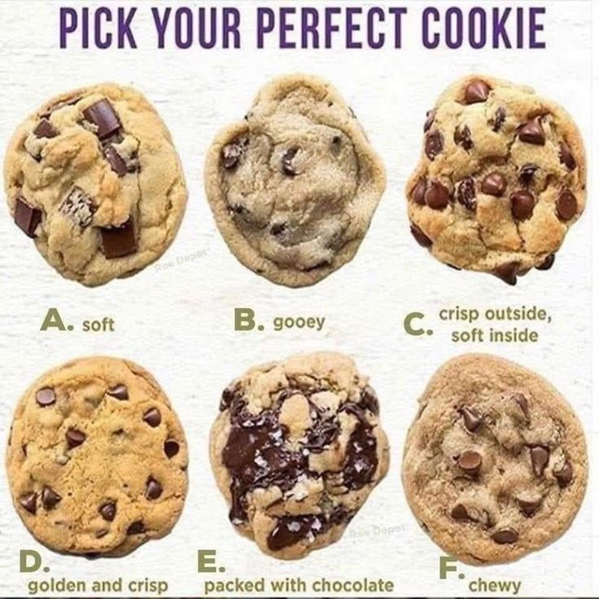
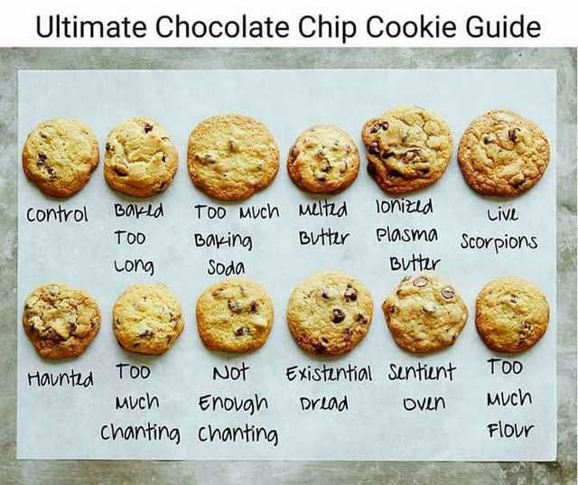
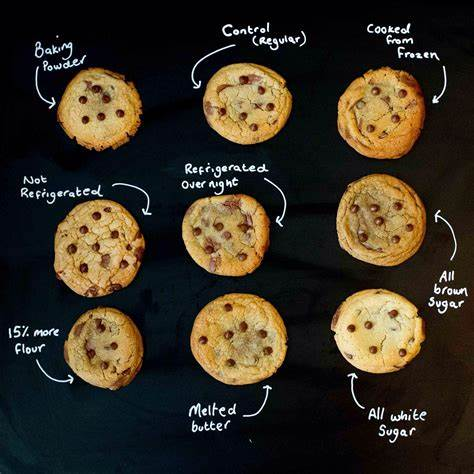
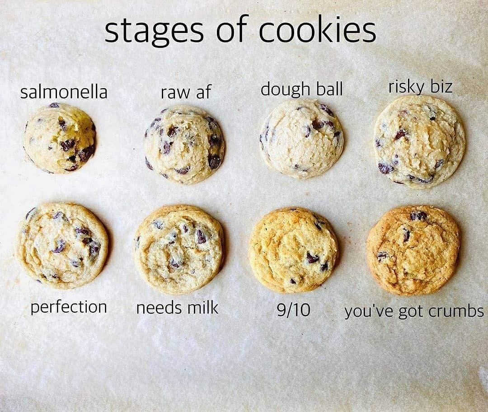

Chocolate Chip Cookies
Chocolate Chip Cookies can be quite complex. There can be a million different ways to create this cookie. Some people love a gooey cookie and others love crispy cookies. Add a billion chocolate chips or just a few. Throw in some white chocolate chips or M&M’s! Follow this simple recipe and modify according to whatever your heart desires.
Ingredients
- 1 cup ---------- Salted Butter (softened)
- 1 cup ---------- White Sugar
- 1 cup ---------- Light Brown Sugar (packed)
- 2 teaspoons --- Pure Vanilla Extract
- 2 --------------- Large Eggs
- 3 cup ---------- All-Purpose Flour
- 1 teaspoon ---- Baking Soda
- 1/2 teaspoon -- Baking Powder
- 1 teaspoon ---- Sea Salt
- 2 cups --------- Chocolate Chips
Instructions
Preheat oven to 375 degrees F.
Tips
Even with the same ingredients your cookies can come out different. If you
let the cookie dough cool in the fridge for a few hours or overnight, the
cookie will be different than if you bake it right away. If you mix in melted Butter
vs softened butter, the cookie will be different.
Use the right measurments.

Add your own twist!

Stages of cookies.

Nutritional Info
Calories are about 60-200 depending on size of cookie.
Also, has been known to reduce stress.